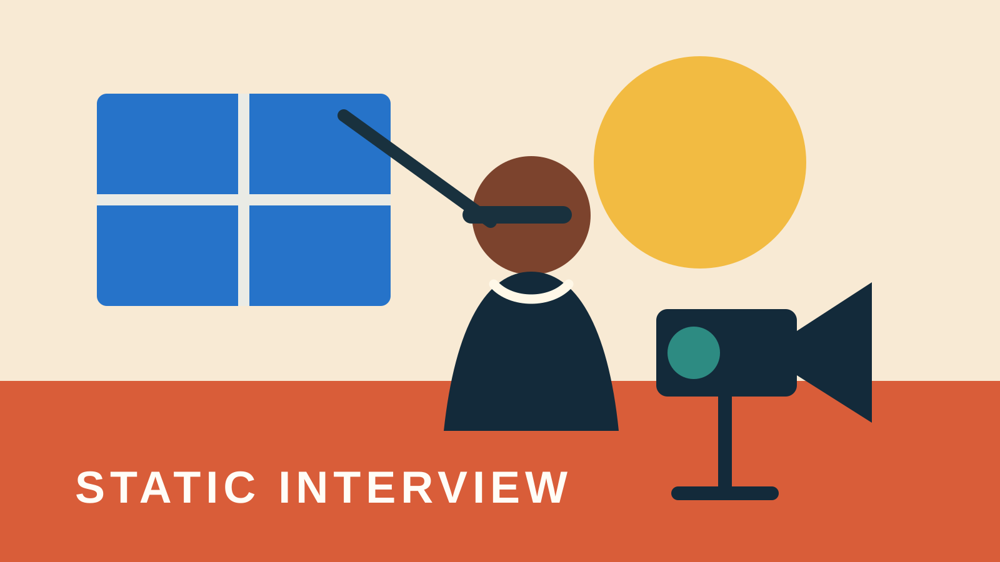
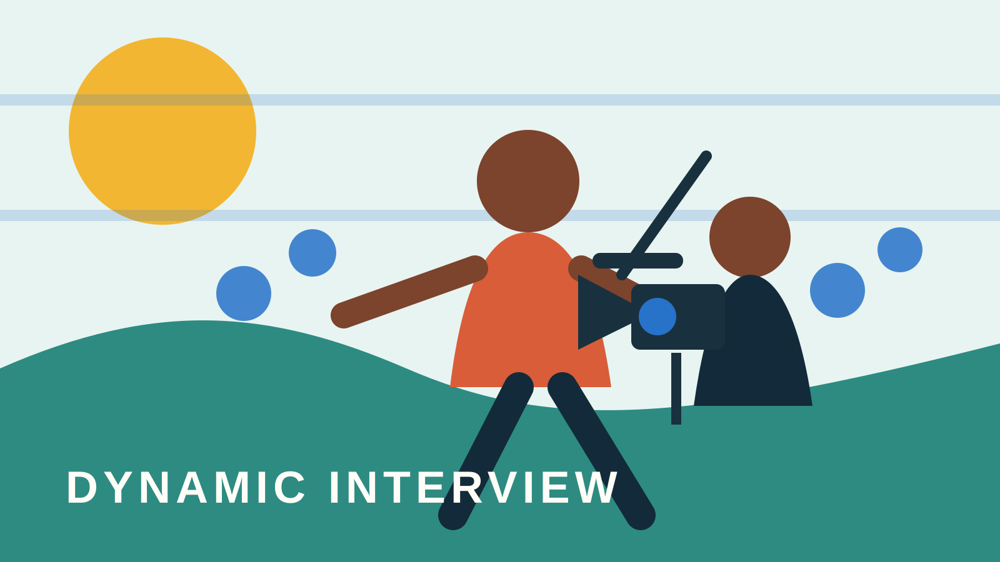

Activity 1
Interview Direction Lab
Design the conditions for a contributor to think, remember, demonstrate, and respond with agency. Choose a static or dynamic strategy, build a question route, and prepare the image, sound, relationship, and stop conditions.
Private by design. No login, submission, analytics, or numerical score. Your writing stays in this browser unless you copy, download, or print it. Do not enter private contact details.


Ready
Reflection summary and export
Your interview direction plan
Review the connected plan below. Return to any section to revise it without restarting.
Your saved work
Reset permanently deletes this activity’s saved writing from this browser.